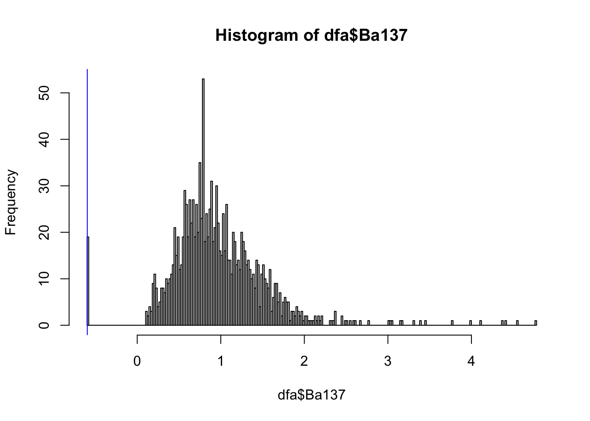

See Btopic136 for a short description, and how to install the package.
See documentation in the package:
library(NBPclassify)
?Fish_scale_elements_fvfSee ?Fish_scale_elements_fvf for a description of the dataset.
This is a classification problem, where we want to classify escaped fish to a location, where the fish was farmed before it escaped.
We show how to use the NBPclassify package.
library(NBPclassify)
library(ggplot2)
theme_set(theme_bw())
library(randomForest)
set.seed(20230401)dfa = Fish_scale_elements_svf
# or
# dfa = Fish_scale_elements_fvfdfa[1:2, ]## Location Id_fish Id_scale Is_escape Li7 B11 Ba137 U238 Mg24 S32
## 1 D 1 1 FALSE -0.0014 3.3 1.1 -1.8 8.9 9
## 2 D 1 2 FALSE -0.2336 NA 2.1 -1.9 8.7 NA
## Mn55 Zn66 Sr88
## 1 5.3 5.2 7.4
## 2 5.2 5.6 NAhist(dfa$Ba137, breaks=200)
abline(v=log(1.1/2), col="blue") The data looks Gaussian, except for a spike at the left and a heavy tail at the right. The spike at the left is becasue of the minimum detection value, see ?Fish_scale_elements_fvf, and we drew a blue line to highlight this.
We will ignore both issues for the rest of this tutorial.
train_cov = dfa[!dfa$Is_escape, -c(1:4)]
train_class = dfa[!dfa$Is_escape, "Location"]
predict_cov = dfa[dfa$Is_escape, -c(1:4)]
pred_ident = dfa[dfa$Is_escape, c("Id_fish", "Id_scale")]
nbp = NBP_classify(train_cov = train_cov,
train_class = train_class,
predict_cov = predict_cov,
identifiers = pred_ident)str(nbp)## 'data.frame': 39420 obs. of 6 variables:
## $ Id_fish : num 1 1 1 1 1 2 2 2 2 2 ...
## $ Id_scale : num 1 2 3 4 5 1 2 3 4 5 ...
## $ nbp_class: chr "D" "D" "D" "D" ...
## $ covariate: chr "Li7" "Li7" "Li7" "Li7" ...
## $ p_val : num 0.299 0.299 0.844 0.862 0.49 ...
## $ logdens : num 0.282 0.281 0.801 0.806 0.582 ...table(nbp$nbp_class)##
## A D M T
## 9855 9855 9855 9855ids = c(0:3)*nrow(predict_cov)*ncol(predict_cov)+1
nbp[ids, ]## Id_fish Id_scale nbp_class covariate p_val logdens
## 233 1 1 D Li7 0.2992 0.28
## 2331 1 1 A Li7 0.0018 -4.40
## 2332 1 1 M Li7 0.4042 0.64
## 2333 1 1 T Li7 0.0937 -0.87p_val = nbp$p_val
by = nbp[, c("Id_fish", "nbp_class", "covariate"), drop=F]
by = nbp[, c("Id_fish", "nbp_class"), drop=F]
agg = aggregate(p_val, by = by, FUN=NBP_aggregate_fischer)head(agg)## Id_fish nbp_class x
## 1 1 A 9.0e-10
## 2 2 A 4.0e-07
## 3 3 A 1.1e-11
## 4 4 A 7.8e-16
## 5 5 A 0.0e+00
## 6 6 A 2.1e-06Note: There is an helper function that does this for you
?NBP_aggregate_p_values. But maybe you prefer dplyr or
other aggregation functions!
There are many ways to summarize the p-values and predictions. We give a few here to give you an idea. But in general, we recommend thinking about how to summarize and aggregate the p-values for your application and decision making process.
We use the aggregated p-values, and a cutoff function, to create 0/1 results. What we in Btopic136 and the paper refer to as W.
agg2 = NBP_pred_categories(agg)## Warning in NBP_pred_categories(agg): One of your columns is an integer column.
## Make sure that you want to threshold this one!
## If not, use as.character on it before calling this function.We convert the integer column to character, because it is an ID column:
agg$Id_fish = as.character(agg$Id_fish)
agg12 = NBP_pred_categories(agg)And then the warning has disappeared.
head(agg12)## Id_fish nbp_class x
## 1 1 A 0
## 2 2 A 0
## 3 3 A 0
## 4 4 A 0
## 5 5 A 0
## 6 6 A 0We can sum this up, for each class/location, to see how many escaped fish could possibly have come from that location.
agg13 = aggregate(agg12$x, by=agg12[, c("nbp_class"), drop=F], FUN=sum)N_fish = length(unique(agg12$Id_fish))
agg13 = rbind(agg13, c("All", N_fish))
names(agg13)[2] = "Not_impossible"
agg13$Not_possible = N_fish - as.numeric(agg13[, 2])
agg13## nbp_class Not_impossible Not_possible
## 1 A 79 182
## 2 D 70 191
## 3 M 111 150
## 4 T 205 56
## 5 All 261 0This means that up to 79 of the figh may have escaped from location A, etc.
The previous summary avoids putting 0’s. This means that the cutoff is very small and it does not put a 0 unless the p-value is very small. In the following summary we show how to put a lot more 0s. Here we will put 0 if the p-value represents significance at the 0.05 level.
agg22 = NBP_pred_categories(agg, type = "simple_cutoff", cutoff = 0.05)agg23 = aggregate(agg22$x, by=agg2[, c("nbp_class"), drop=F], FUN=sum)N_fish = length(unique(agg22$Id_fish))
agg23 = rbind(agg23, c("All", N_fish))
names(agg23)[2] = "Very_possible"
agg23## nbp_class Very_possible
## 1 A 20
## 2 D 22
## 3 M 39
## 4 T 112
## 5 All 261This means that 20 fish fit very well with location A. Some of these may fit with several locations, and then it is not immediately clear which location it comes from.
cbind(agg23, agg13[, 2, drop=F])## nbp_class Very_possible Not_impossible
## 1 A 20 79
## 2 D 22 70
## 3 M 39 111
## 4 T 112 205
## 5 All 261 261Here we summarise with grades from 1 to 6, where 1 means that it does
not fit well at all, and 5/6 means that it fits very well. For details,
read the function NBP_pred_categories.
Instead of summarising it, we show fish by fish how well it fits to each location:
agg31 = NBP_pred_categories(agg, type = "Grading1to6_V1")
agg31 = reshape(agg31, direction="wide", idvar=c("Id_fish"),
timevar="nbp_class")
names(agg31)[-1] = substr(names(agg31)[-1], 3, 3)
head(agg31)## Id_fish A D M T
## 1 1 1 3 5 6
## 2 2 2 2 4 5
## 3 3 1 1 1 5
## 4 4 1 1 1 2
## 5 5 1 1 1 1
## 6 6 2 3 3 3For decision making, we can go through fish by fish, use these grades, and other external information that may be available, to make an informed expert opinion.
If the expert has questions about the grades, pull up the p-values from where it comes. E.g. for fish 2, class T:
is1 = nbp$Id_fish==2 & nbp$nbp_class=="T"
str(nbp[is1, ])## 'data.frame': 45 obs. of 6 variables:
## $ Id_fish : num 2 2 2 2 2 2 2 2 2 2 ...
## $ Id_scale : num 1 2 3 4 5 1 2 3 4 5 ...
## $ nbp_class: chr "T" "T" "T" "T" ...
## $ covariate: chr "Li7" "Li7" "Li7" "Li7" ...
## $ p_val : num 0.152 0.391 0.464 0.749 0.384 ...
## $ logdens : num -0.496 0.165 0.263 0.481 0.152 ...In this way we can iteratively learn about the grades, the model, and the covariates. We can then improve our understanding, our modelling, and our decision making over time.
Here we perform CV with a big for loop. This is to investigate the performance of the three alternate models. One of the alternate models is using the NBP package to do a robust Naive Bayes.
dfas = dfa[!(dfa$Is_escape), ]
rm(dfa)
all_locs = unique(dfas$Location)
all_locs## [1] "D" "A" "M" "T"n_sim = 100
all.pred.compare = data.frame()
for (i.simulations in 1:n_sim){
for (true_escape_loc in all_locs) {
idx = which(dfas$Location==true_escape_loc)
id.escape = sort(sample(idx, 5))
## Create Training set
dfa_train_cov = dfas[-id.escape, -c(1:4)]
dfa_train_class = dfas[-id.escape, "Location"]
## Create Test set
dfa_testing = dfas[id.escape, -c(1:4)]
## Fit and predict
nbp = NBP_classify(train_cov = dfa_train_cov,
train_class = dfa_train_class,
predict_cov = dfa_testing)
## Direct aggregation over all
nbp_agg = NBP_aggregate_p_values(nbp$p_val, by=nbp[, "nbp_class", drop=F])
pred.NBP = nbp_agg$nbp_class[which.max(nbp_agg$p_val)]
## Naive Bayes with robust estimation
nnb_agg = aggregate(nbp[, "logdens", drop=F], by = nbp[, 2, drop=F],
FUN=sum, na.rm=T)
# nnb_agg
pred.NB2 = nnb_agg$nbp_class[which.max(nnb_agg$logdens)]
if (require(e1071)){
## Standard Naive Bayes
fit.nb=naiveBayes(dfa_train_class~., dfa_train_cov)
pred.nb.1=predict(fit.nb, dfa_testing)
tt <- table(pred.nb.1)
pred.NB1 = names(tt[which.max(tt)])
all.pred.compare = rbind(all.pred.compare,
data.frame(true_escape_loc, pred.NBP, pred.NB2, pred.NB1))
} else {
all.pred.compare = rbind(all.pred.compare,
data.frame(true_escape_loc, pred.NBP, pred.NB2))
}
}
}This is the “biggest p-value”, from the NBP package:
table(all.pred.compare[, c(1,2)])## pred.NBP
## true_escape_loc A D M T
## A 100 0 0 0
## D 0 89 3 8
## M 0 7 46 47
## T 0 0 0 100This is a robust Naive Bayes from the NBP package:
table(all.pred.compare[, c(1,3)])## pred.NB2
## true_escape_loc A D M T
## A 100 0 0 0
## D 0 92 7 1
## M 0 10 86 4
## T 2 0 1 97This is standard Naive Bayes, using the package e1071:
try({
table(all.pred.compare[, c(1,4)])
})## pred.NB1
## true_escape_loc A D M T
## A 100 0 0 0
## D 0 89 11 0
## M 0 21 79 0
## T 4 0 6 90